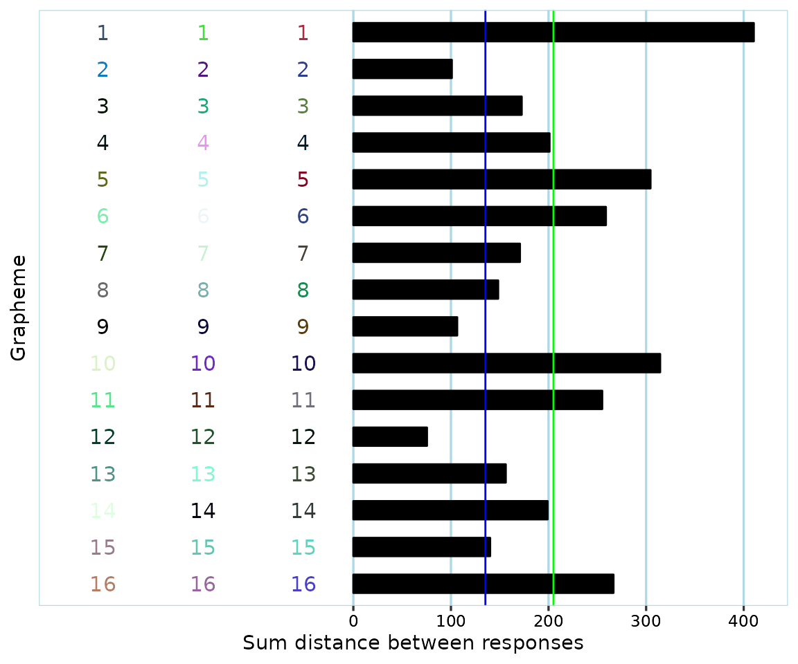
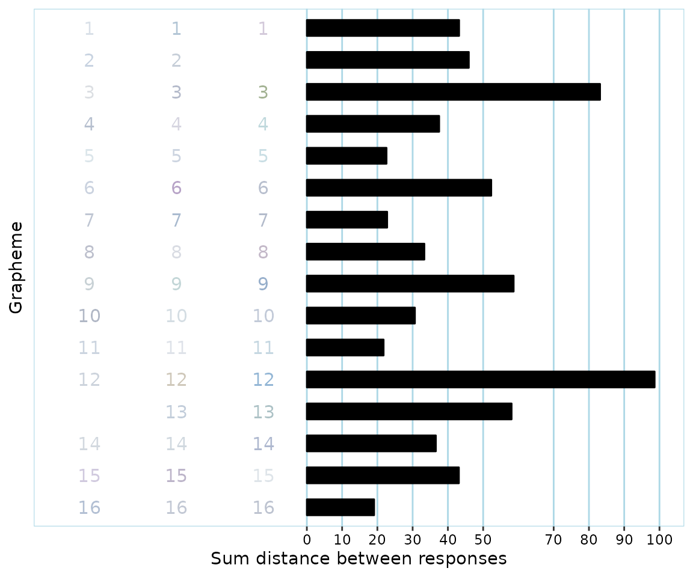
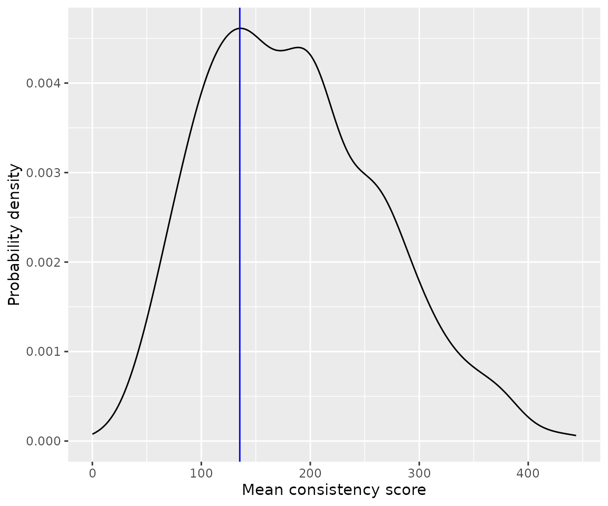
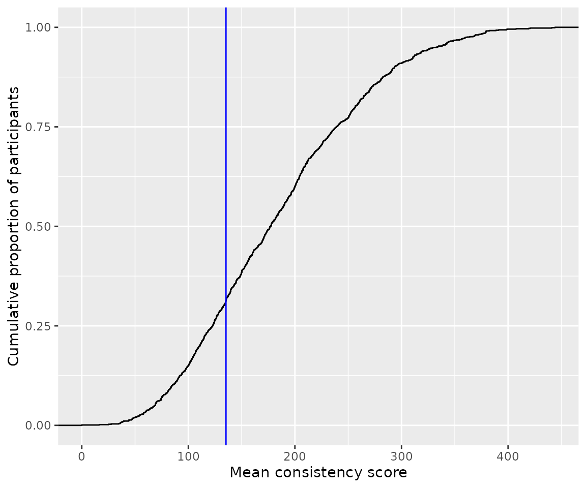

Using synr with real data: Coloured vowels
Source:vignettes/articles/dingemanse-data-example.Rmd
dingemanse-data-example.RmdIntroduction
This is an example of how to use synr with actual data. For an in-depth tutorial which explains how synr works, including the functionality that comes up here, please see the main tutorial.
The data used here are from a study by Cuskley, Dingemanse, van Leeuwen & Kirby (2019) and are available through this GitHub repository. Note that the user (mdingemanse) who owns the repository is not involved in synr development, so please don’t send questions about synr to him or other co-authors of the article.
The data are from an experiment where participants listened to 16 different recordings of spoken vowel sounds and responded with colors they experienced/associated with the vowels. You can find much more detail in the article and repository. In this tutorial, we’ll assume that each of the recordings can be thought of as a single object, analogous to a grapheme. Note that even though synr always refers to trial stimuli as ‘graphemes’ or ‘symbols’ (in order to make the documentation less abstract), you can apply synr to other types of consistency test data. Just remember that ‘grapheme’ then really means e. g. ‘vowel sound’ or whatever other type of stimuli are presented to participants.
Load required libraries
We’ll use tidyr to reformat the raw data, explained
below, and ggplot2 for producing custom plots. You should
already have ggplot2 installed since synr
depends on it, but may you need to run
install.packages("tidyr") to get tidyr.
Download and reformat raw data
We’ll first download the raw data from GitHub.
# download the 'coloured vowels' data
githuburl <- 'https://raw.githubusercontent.com/mdingemanse/colouredvowels/master/BRM_colouredvowels_voweldata.csv'
dingemanse_voweldata <- read.csv(githuburl, sep=' ')The downloaded data are in a ‘one-row-per-stimulus’ (vocal sound) format. synr needs the data to be in either ‘long’ or ‘wide’ format, as described in the article Creating ParticipantGroup objects. Generally, ‘long’ format is preferred, so let’s reformat the data to this.
# 'pivot' the data into a long (one row per observation/trial) format,
# using tidyr's pivot_longer function (and the 'pipe' %>% operator)
cvow_long <- dingemanse_voweldata %>%
pivot_longer(
cols=c('color1', 'color2', 'color3',
'timing1', 'timing2', 'timing3'),
names_to=c(".value", "trial"),
names_pattern="(\\w*)(\\d)",
values_to=c('color', 'timing')
)
print(head(cvow_long))
#> # A tibble: 6 × 6
#> anonid setname item trial color timing
#> <chr> <chr> <int> <chr> <chr> <int>
#> 1 0045dbc0-8936-4c47-b8a2-333f29f3a505 set1 12 1 #A82816 18689
#> 2 0045dbc0-8936-4c47-b8a2-333f29f3a505 set1 12 2 #B2282B 6599
#> 3 0045dbc0-8936-4c47-b8a2-333f29f3a505 set1 12 3 #BB322B 5893
#> 4 0045dbc0-8936-4c47-b8a2-333f29f3a505 set1 9 1 #3C3899 12561
#> 5 0045dbc0-8936-4c47-b8a2-333f29f3a505 set1 9 2 #F44E50 4046
#> 6 0045dbc0-8936-4c47-b8a2-333f29f3a505 set1 9 3 #EE5A3D 7648Roll up data into a ParticipantGroup object
Note that this might take a couple of minutes, since the data set is quite large.
pg <- create_participantgroup(
raw_df=cvow_long,
n_trials_per_grapheme=3,
id_col_name="anonid",
symbol_col_name="item",
color_col_name="color",
time_col_name="timing",
color_space_spec="Luv"
)We use the L*u*v color space here, since that’s what the article’s authors used.
Apply various synr functions
Single participant plot
Let’s produce a plot for the participant with ID “0086e9c0-418c-404c-8f3c-219de93cc3dc” (the raw data use anonymized ID’s, which is why they are rather unwieldy).
example_plot <- pg$participants[["0086e9c0-418c-404c-8f3c-219de93cc3dc"]]$get_plot(
mean_line=TRUE,
cutoff_line=TRUE,
grapheme_size=4
)
# inspect the plot
example_plot
Remember that the ‘grapheme’ axis here is really a ‘recording/vowel sounds’ axis.
The participant appears to have provided valid responses with a fair bit of variation. Their mean consistency score (green line) was slightly above 200, far higher than the cutoff (blue line) of 135.30 that was suggested in Rothen, Seth, Witzel & Ward (2013) for the L*u*v color space.
Of course, it’s not expected that most users will want to produce plots for all participants and look through them one by one. It can however be useful to look at a few of them to get a better feel for the data, or to inspect data more closely if something about a participant’s responses seems off.
Mean consistency scores
Here, we force a mean consistency score to be calculated even where participants have some (but not all) items with less than 3 valid color responses by specifying na.rm=TRUE. We specify that consistency scores should be calculated by using euclidean distances (synr uses euclidean distances by default, but it’s specified here for extra clarity).
mean_cons_scores <- pg$get_mean_consistency_scores(
method='euclidean',
na.rm=TRUE
)We’ll also put the consistency scores in a data frame where scores are linked to their respective participant ID’s:
participant_ids <- pg$get_ids()
cons_score_df <- data.frame(
participant_id=participant_ids,
mean_cons_score=mean_cons_scores
)
print(head(cons_score_df))
#> participant_id mean_cons_score
#> 1 0045dbc0-8936-4c47-b8a2-333f29f3a505 85.22161
#> 2 005c48a4-acb7-4e25-8e4a-447e08a2dc85 225.60228
#> 3 0086e9c0-418c-404c-8f3c-219de93cc3dc 205.05324
#> 4 009f9049-bb4f-4dec-a889-2a408d9b7fc4 84.60556
#> 5 00ac0df1-ee81-4357-86c9-ce8691a6a4f1 171.22806
#> 6 0127d04d-0070-4bec-a004-2e658edac121 227.25244Number of graphemes with all-valid responses
Let’s add information for each participant about the number of graphemes that they provided all-valid (3 non-NA, ie they correctly chose a color) responses for.
num_valid <- pg$get_numbers_all_colored_graphemes()
cons_score_df[['num_allvalid_sounds']] <- num_valid
print(head(cons_score_df))
#> participant_id mean_cons_score num_allvalid_sounds
#> 1 0045dbc0-8936-4c47-b8a2-333f29f3a505 85.22161 16
#> 2 005c48a4-acb7-4e25-8e4a-447e08a2dc85 225.60228 16
#> 3 0086e9c0-418c-404c-8f3c-219de93cc3dc 205.05324 16
#> 4 009f9049-bb4f-4dec-a889-2a408d9b7fc4 84.60556 16
#> 5 00ac0df1-ee81-4357-86c9-ce8691a6a4f1 171.22806 16
#> 6 0127d04d-0070-4bec-a004-2e658edac121 227.25244 16We might want to only include participants who had a minimum of 8 (50%) stimuli with all-valid responses, based on what the original article says:
A total of 34 participants were removed from the sample because they chose “No color” for more than half of the items in the vowel association task, making it impossible to calculate a valid vowel consistency score.
print(paste('number of participants before filtering:', nrow(cons_score_df)))
#> [1] "number of participants before filtering: 1164"
enough_responses_filter <- cons_score_df$num_allvalid_sounds >= 8
cons_score_df <- cons_score_df[enough_responses_filter, ]
print(paste('number of participants after filtering:', nrow(cons_score_df)))
#> [1] "number of participants after filtering: 1105"It’s not clear why there are seemingly more participants which fit the exclusion criteria in the data from GitHub compared to what is reported in the original article. (if you notice an error in this article, please write about it to datalowe@posteo.de)
Validate participant data
synr includes a unique procedure for automatically classifying test data as valid or invalid, as explained in a specific synr article available online. Cuskley et al.’s article itself doesn’t mention any validation procedure apart from excluding participants with too many “No color” responses, so we might try to apply very lenient criteria in order to only catch obviously invalid data, such as participants having used very similar colors (eg slightly different shades of black) for more than 80% of all their responses. Please see the validation article online for details about what’s happening here.
validation_df <- pg$check_valid_get_twcv_scores(
min_complete_graphemes = 8,
dbscan_eps = 20,
dbscan_min_pts = 4,
max_var_tight_cluster = 150,
max_prop_single_tight_cluster = 0.8,
safe_num_clusters = 2,
safe_twcv = 300
)
# again, use filter to only keep data from participants with
# >=8 all-valid responses graphemes
validation_df <- validation_df[enough_responses_filter, ]
cons_score_df[['data_valid']] <- validation_df$valid
cons_score_df[['reason_invalid']] <- validation_df$reason_invalid
# show only participants whose data were classified as invalid,
# and only relevant columns
cons_score_df[!cons_score_df$data_valid, c("participant_id", "mean_cons_score", "reason_invalid")]
#> participant_id mean_cons_score reason_invalid
#> 11 01e8370f-22a2-434a-b86b-ebfc65f28327 63.30219869 few_clusters_low_twcv
#> 26 06644552-815c-47ad-a1a4-d774ac61f1e8 38.09724961 hi_prop_tight_cluster
#> 37 0b40b649-8cd0-4252-bcad-04b607694eb9 36.04509901 hi_prop_tight_cluster
#> 100 1fcd6ef5-057d-4655-a314-17aee2cbac99 25.20097383 hi_prop_tight_cluster
#> 134 28f1a586-d2c5-4c44-ba33-60e59768847c 59.66737827 few_clusters_low_twcv
#> 288 58156a1e-2633-4435-b404-750ec370bd51 36.42790210 hi_prop_tight_cluster
#> 408 7ae98022-d5d8-460e-a1c3-68b43487e191 16.41104298 hi_prop_tight_cluster
#> 554 ad9219a1-9566-4654-ba28-ac277175a347 36.19079247 hi_prop_tight_cluster
#> 606 bc3ed730-ceed-44f0-97ac-8bf7fe1b8615 39.27415198 hi_prop_tight_cluster
#> 645 ca108b61-6b84-4e1e-ab31-4c111ff885a6 27.54943999 hi_prop_tight_cluster
#> 674 d47c0e32-e3e2-4acf-84d0-08bf7375308b 44.21594367 hi_prop_tight_cluster
#> 717 de916a2b-5041-4ecf-af86-4e11feaa5d4c 0.03445631 hi_prop_tight_cluster
#> 931 5b84fcd8-7982-46bd-9f13-1771a4f2b6df 44.28342864 hi_prop_tight_cluster
#> 935 660ed2f1-7631-4c97-a46e-f9481d37bc4b 56.10827516 hi_prop_tight_cluster
#> 992 e8dd5ab3-8d3d-4137-9fd4-3b6fdf42cb97 69.07712926 few_clusters_low_twcv
#> 1104 43dd077f-b955-4ba0-8ebb-a442a4ad913f 34.78898926 hi_prop_tight_cluster
#> 1154 2b20c245-5ca1-4a1e-9b71-daa17ef445e1 46.99291493 few_clusters_low_twcvAll of the identified data sets that were classified by synr as invalid appear to have 80% or more of all responses be in roughly the same color. One of the participants, ‘de916a2b-5041-4ecf-af86-4e11feaa5d4c’, very clearly has invalid data even based on just their consistency score (0.034), as it is extremely low (due to having responded with black on all trials). What might be more interesting is to take a closer look at the participant with the highest consistency score (44.2), as their case might be somewhat less clear-cut.
pg$participants[["d47c0e32-e3e2-4acf-84d0-08bf7375308b"]]$get_plot(
grapheme_size=4
)
The participant has actually used what we might consider to be different colors, ie hues. Note however that their consistency score (44.2) means that they would be considered a synesthete, even though there is actually very little consistency in what hues are used for the different sounds, due to all colors being very light. For instance, the participant used a ‘greyish’, a ‘brownish’ and a ‘bluish’ color for the 12th grapheme/sound, but even the consistency score for this particular grapheme is well below the cutoff of 135.3. This means that even though one could argue that responses have fairly different hues, at least in the context of consistency tests as they are currently commonly used and evaluated, synr is correct in classifying the participant’s data as invalid, ie having too little color variation.
It appears then that if synr were to be used in this manner, some misclassifications of participants as synesthetes could be prevented.
Use synr-generated data with other libraries
Once data have been exported to a data frame, they can be used with other libraries as usual.
For example, we might be interested in the distribution of mean consistency scores.
ggplot(cons_score_df, aes(x=mean_cons_score)) +
geom_density() +
geom_vline(xintercept = 135.3, color="blue") +
labs(x='Mean consistency score', y='Probability density')
ggplot(cons_score_df, aes(x=mean_cons_score)) +
stat_ecdf(geom = "step") +
geom_vline(xintercept = 135.3, color="blue") +
labs(x='Mean consistency score', y='Cumulative proportion of participants')
It appears that about 30% of all participants scored below the suggested cut-off of 135, as already reported by Cuskley et al.
Summary
Much of the ‘results’ included here can already be found in the article by Cuskley et al. However, this article has hopefully given you an idea of how synr can be used with different types of data, and what role it fulfills.
References
Cuskley, C.1, Dingemanse, M.1, van Leeuwen, T. & Kirby, S. 2019. Cross-modal associations and synaesthesia: Categorical perception and structure in vowel-colour mappings in a large online sample. Behaviour Research Methods, doi: 10.3758/s13428-019-01203-7
Rothen, N., Seth, A. K., Witzel, C., & Ward, J. (2013). Diagnosing synaesthesia with online colour pickers: maximising sensitivity and specificity. Journal of neuroscience methods, 215(1), 156-160.